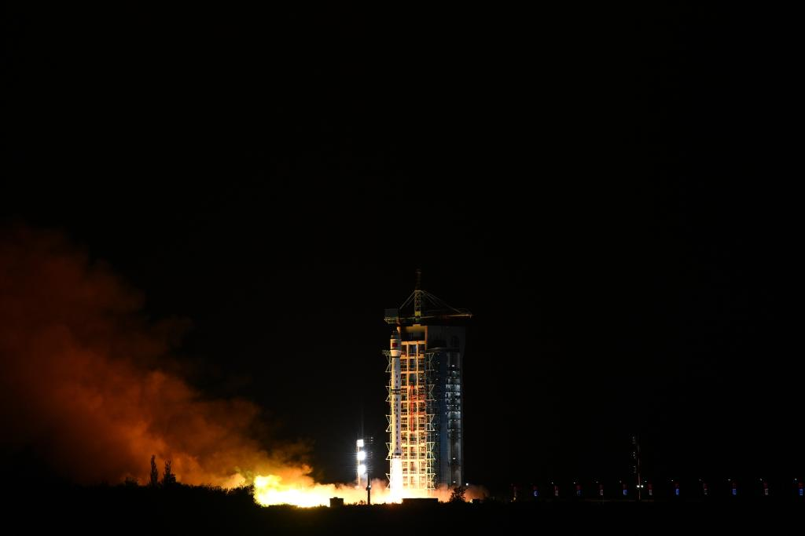

新华社上海9月27日电（记者张建松）数据更新时效由6小时缩短至4小时、气象预报时效延长24小时、气象预报精度提升3%、灾害监测时效提高近1倍……这是最新到太空"上岗"的风云三号08星，即将提交的"业绩单"。
27日3时28分，我国在酒泉卫星发射中心使用长征四号丙运载火箭，成功将风云三号08星发射升空，卫星顺利进入预定轨道，发射任务获得圆满成功。星箭均由中国航天科技集团有限公司八院抓总研制。
据八院风云三号08星设计师邵益凯介绍，风云三号08星是我国第二代低轨气象卫星系列风云三号的第8颗卫星，也是风云气象卫星连续成功发射的第22颗卫星，发射重量约2780Kg，运行于高度830km、倾角98.7°的太阳同步轨道，主要任务是实现天气预报、开展大气化学和气候变化监测。
卫星装载了中分辨率光谱成像仪、红外高光谱大气探测仪、微波温度计、微波湿度计、微波成像仪、全球导航卫星掩星探测仪、高光谱温室气体监测仪、电离层光度计和广角极光成像仪9台遥感仪器，将在国际上首次实现百公里幅宽的高精度全球温室气体精细探测。
"在众多先进设备'加持'下，风云三号08星定量精度高，光谱定标精度达到皮米量级。综合能力强，可实现全谱段、定量化同平台观测。探测要素全，在实现温、湿、风、雨、云等全要素大气遥感探测的基础上，可同时获取全球温室气体、极光、电离层等遥感信息。"邵益凯说。
此外，风云三号08星还具备在轨监测冰雪覆盖和海面温度，提供短期气候预测、气候变化预估所需的遥感信息；获取全球大气化学分布；在轨监测自然灾害、生态与环境；在轨开展极光和电离层数据监测等本领。
"风云三号08星到太空'上岗'后，将与05星、06星、07星组网，实现全球观测资料100%覆盖，保障气象领域核心业务。"邵益凯说，"卫星在轨获取数值预报同化应用需要的气象参数，数据更新时效将由6小时缩短至4小时，气象预报时效延长24小时左右，气象预报精度提升3%左右，灾害监测时效提高近1倍，将有力提升天气预测预报能力。"